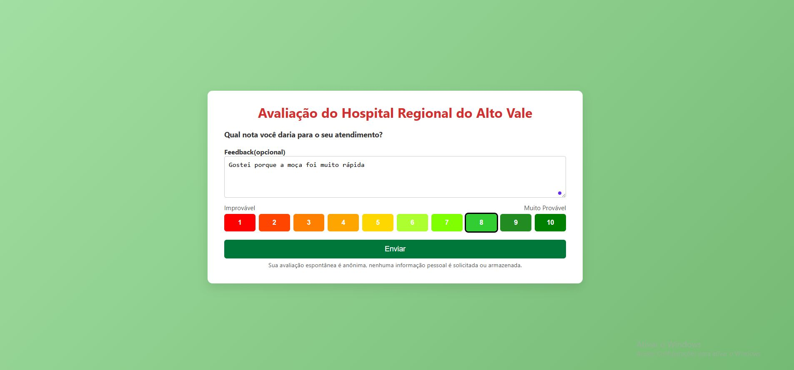

Avaliação Hospitalar
Esta é uma aplicação web desenvolvida com o objetivo de permitir a coleta e análise de avaliações dos serviços prestados pelo Hospital Regional do Alto Vale do Itajaí.
O sistema possibilita a realização de avaliações, bem como o gerenciamento de perguntas, setores e dispositivos, além de oferecer uma visão mais estratégica por meio de um dashboard com indicadores.
Teve como foco o aprendizado prático de PHP, arquitetura MVC e Programação Orientada a Objetos (POO).